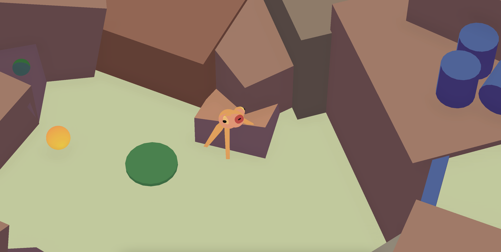

Fwogame
A 3D Game to play around with procedural animations
Play on Itch.ioInspiration
The idea came from playing some of Sokpop's little games, and I just wanted to make a small little project to replicate their signature leg animation as showcased in this video.
Procedural Limbs Animations
I used Unity's line renderer to create the limbs setting the origin on the character's body and the end at the target end effector which is going to be calculated according to various factors.
- First of all, the end effector will anchor to the terrain and will not move when the body of the character and the origin of the limb moves around.
- I set a maximum Tollerance range around each end effector.
- a Ray is cast from each origin point downwards to determine how much the character has moved from the anchored point.
- If the Raycast's hit point exceeded the Tollerance range, then the legs end effectors will be repositioned to the new target, making the caracter effectively perform a step.
- A small offset and other adjustments are added for the walking cycle to look more natural.
- More animations are then added to other parts of the character, like body rotations and damping based on the current velocity and so on.


 ]
]
More Screenshots
